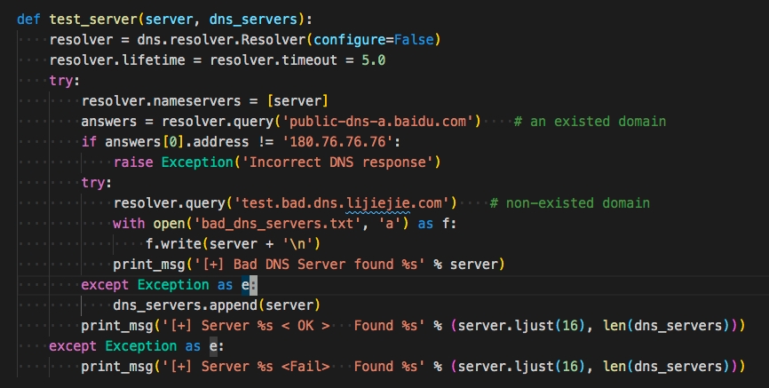
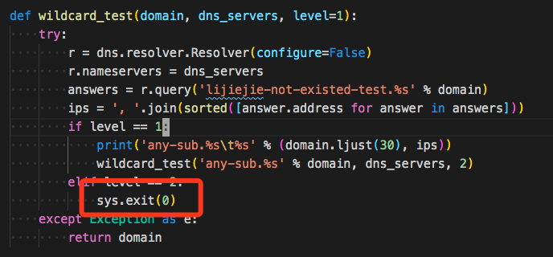
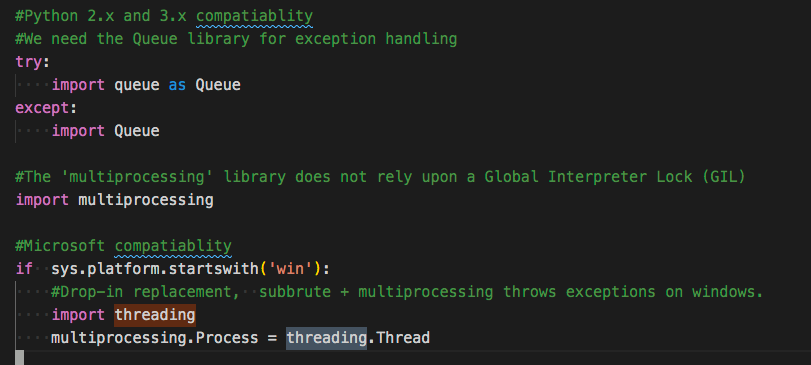
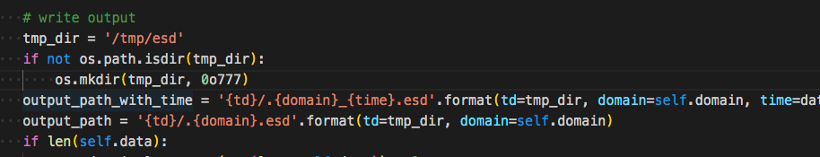
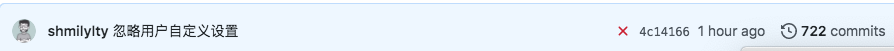
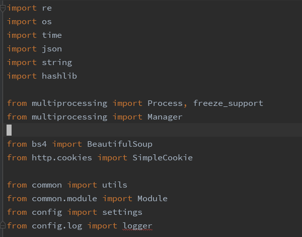
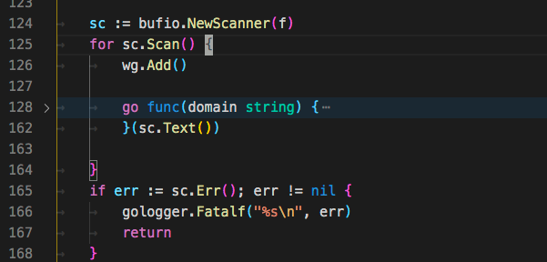
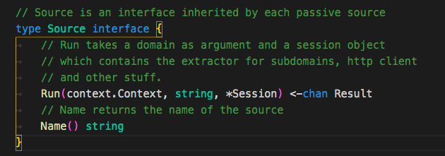
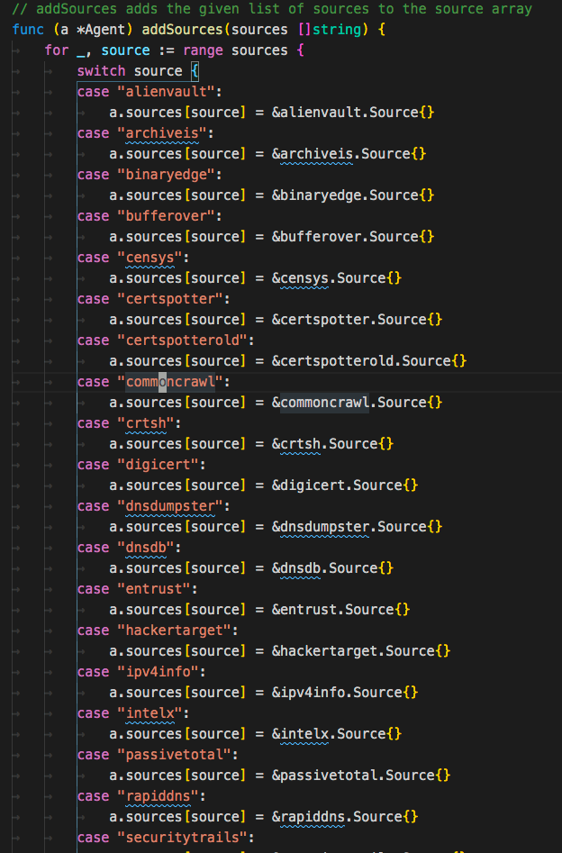
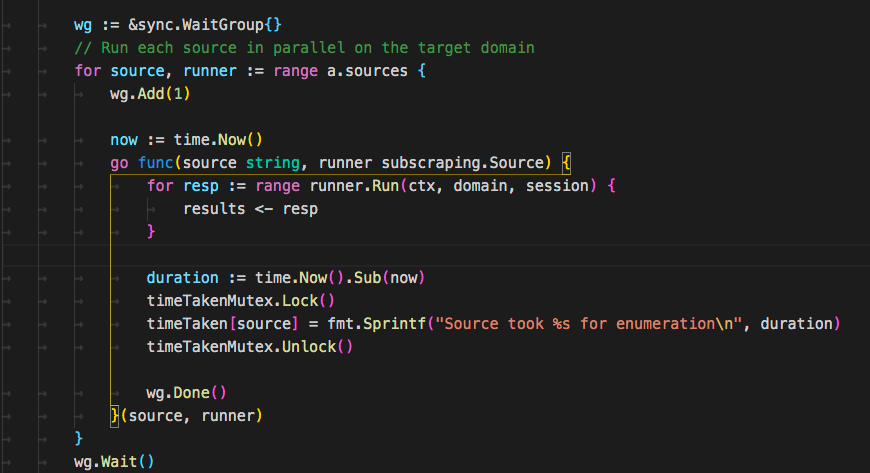

开源的域名收集工具有很多，本文会从代码的角度去看各类开源的域名收集工具的技术特点，以及各有哪些优缺点，来帮助大家，在合适的时候选择合适的利用工具。
这里选取了常用和知名的工具，包括subDomainBrute,Sublist3r,ESD,OneForAll,dnsprobe,subfinder,shuffledns,massdns
subDomainBrute
Github:https://github.com/lijiejie/subDomainsBrute
最早使用是lijiejie的子域名爆破工具,也是学习python时最早看的源码。
看了下commit，最早发布是在2015年，另外最近的一次更新使它支持了Python3。
subDomainBrute是通过纯DNS爆破来找到子域名，为了最大提升效率，subDomainBrute用协程+多进程的方式进行爆破。
对于python3，使用asyncio,aiodns库进行异步dns的发包，但对于python2，使用的是dnspython gevent库，应该是历史原因导致的。
Dns server test
对于爆破dns来说，有足够多且快的dns server是关键(爆破一段时间后，可能会有dns不再回应请求)
可以自己配置dns server在dict/dns_servers.txt文件中，subDomainBrute会在程序启动时测试DNS。
首先测试dns server

测试 public-dns-a.baidu.com 返回 180.76.76.76 是正确的dns
测试 test.bad.dns.lijiejie.com 抛出异常则为正确的dns，如果有返回结果，则不正常。
泛域名
subDomainBrute没有泛域名处理，如果存在泛域名解析，程序就会直接退出。

Sublist3r
Github https://github.com/aboul3la/Sublist3r
Sublist3r也是2015年发布的,在暴力破解的基础上还会通过接口枚举来获取域名。
它的爆破模块用的是 https://github.com/TheRook/subbrute
SubBrute是一个社区驱动的项目，旨在创建最快，最准确的子域枚举工具。SubBrute背后的神奇之处在于它使用开放式解析器作为一种代理来规避DNS速率限制（https://www.us-cert.gov/ncas/alerts/TA13-088A）。该设计还提供了一层匿名性，因为SubBrute不会将流量直接发送到目标的名称服务器。
提供了一层匿名性 => 用很多代理DNS来进行DNS请求
它只有多进程来运行爆破程序，如果在Windows下，它只会使用线程

可能是觉得在Windows下难以操控多线程吧。
但这样一来它的效率就太慢了。
它支持的搜索引擎
supported_engines = {'baidu': BaiduEnum,
'yahoo': YahooEnum,
'google': GoogleEnum,
'bing': BingEnum,
'ask': AskEnum,
'netcraft': NetcraftEnum,
'dnsdumpster': DNSdumpster,
'virustotal': Virustotal,
'threatcrowd': ThreatCrowd,
'ssl': CrtSearch,
'passivedns': PassiveDNS
}
用随机数来判断是否泛解析
#Using a 32 char string every time may be too predictable.
x = uuid.uuid4().hex[0:random.randint(6, 32)]
testdomain = "%s.%s" % (x, host)
同样它也不支持泛解析的支持。
唯一有优势的就是它能作为一个python包存在，通过pip就能快速安装使用，或者把它集成在代码中。
ESD
Github:https://github.com/FeeiCN/ESD
相比于其他的暴力收集手段，esd在很多方面有独特的想法。
支持泛解析域名
基于
RSC（响应相似度对比）技术对泛解析域名进行枚举（受网络质量、网站带宽等影响，速度会比较慢）基于
aioHTTP获取一个不存在子域名的响应内容，并将其和字典子域名响应进行相似度比对。 超过阈值则说明是同个页面，否则则为可用子域名，并对最终子域名再次进行响应相似度对比。更快的速度
基于
AsyncIO异步协程技术对域名进行枚举（受网络和DNS服务器影响会导致扫描速度小幅波动，基本在250秒以内）基于
AsyncIO+aioDNS将比传统多进程/多线程/gevent模式快50%以上。 通过扫描qq.com，共170083条规则，找到1913个域名，耗时163秒左右，平均1000+条/秒。更全的字典
融合各类字典，去重后共170083条子域名字典
- 通用字典
- 单字母、单字母+单数字、双字母、双字母+单数字、双字母+双数字、三字母、四字母
- 单数字、双数字、三数字
- 域名解析商公布使用最多的子域名
- DNSPod: dnspod-top2000-sub-domains.txt
- 其它域名爆破工具字典
- subbrute: names_small.txt
- subDomainsBrute: subnames_full.txt
更多的收集渠道
- [X] 收集DNSPod接口泄露的子域名
- [X] 收集页面响应内容中出现的子域名
- [X] 收集跳转过程中的子域名
- [X] 收集HTTPS证书透明度子域名
- [X] 收集DNS域传送子域名
- [x] 收集搜索引擎子域名
- [x] 收集zoomeye、censys、fofa、shodan的接口结果
DNS服务器
- 解决各家DNS服务商对于网络线路出口判定不一致问题
- 解决各家DNS服务商缓存时间不一致问题
- 解决随机DNS问题，比如fliggy.com、plu.cn等
- 根据网络情况自动剔除无效DNS，提高枚举成功率
很多实现都值得学习，这里贴出一些值得学习的代码。
域传输漏洞实现
class DNSTransfer(object):
def __init__(self, domain):
self.domain = domain
def transfer_info(self):
ret_zones = list()
try:
nss = dns.resolver.query(self.domain, 'NS')
nameservers = [str(ns) for ns in nss]
ns_addr = dns.resolver.query(nameservers[0], 'A')
# dnspython 的 bug，需要设置 lifetime 参数
zones = dns.zone.from_xfr(dns.query.xfr(ns_addr, self.domain, relativize=False, timeout=2, lifetime=2), check_origin=False)
names = zones.nodes.keys()
for n in names:
subdomain = ''
for t in range(0, len(n) - 1):
if subdomain != '':
subdomain += '.'
subdomain += str(n[t].decode())
if subdomain != self.domain:
ret_zones.append(subdomain)
return ret_zones
except BaseException:
return []
HTTPS证书透明度获取子域名
class CAInfo(object):
def __init__(self, domain):
self.domain = domain
def dns_resolve(self):
padding_domain = 'www.' + self.domain
# loop = asyncio.get_event_loop()
loop = asyncio.new_event_loop()
asyncio.set_event_loop(loop)
resolver = aiodns.DNSResolver(loop=loop)
f = resolver.query(padding_domain, 'A')
result = loop.run_until_complete(f)
return result[0].host
def get_cert_info_by_ip(self, ip):
s = socket.socket()
s.settimeout(2)
base_dir = os.path.dirname(os.path.abspath(__file__))
cert_path = base_dir + '/cacert.pem'
connect = ssl.wrap_socket(s, cert_reqs=ssl.CERT_REQUIRED, ca_certs=cert_path)
connect.settimeout(2)
connect.connect((ip, 443))
cert_data = connect.getpeercert().get('subjectAltName')
return cert_data
def get_ca_domain_info(self):
domain_list = list()
try:
ip = self.dns_resolve()
cert_data = self.get_cert_info_by_ip(ip)
except Exception as e:
return domain_list
for domain_info in cert_data:
hostname = domain_info[1]
if not hostname.startswith('*') and hostname.endswith(self.domain):
domain_list.append(hostname)
return domain_list
def get_subdomains(self):
subs = list()
subdomain_list = self.get_ca_domain_info()
for sub in subdomain_list:
subs.append(sub[:len(sub) - len(self.domain) - 1])
return subs
纯socket实现的check dns server
def check(self, dns):
logger.info("Checking if DNS server {dns} is available".format(dns=dns))
msg = b'\x5c\x6d\x01\x00\x00\x01\x00\x00\x00\x00\x00\x00\x03www\x05baidu\x03com\x00\x00\x01\x00\x01'
sock = socket.socket(socket.AF_INET, socket.SOCK_DGRAM)
sock.settimeout(3)
repeat = {
1: 'first',
2: 'second',
3: 'third'
}
for i in range(3):
logger.info("Sending message to DNS server a {times} time".format(times=repeat[i + 1]))
sock.sendto(msg, (dns, 53))
try:
sock.recv(4096)
break
except socket.timeout as e:
logger.warning('Failed!')
if i == 2:
return False
return True
基于文本相似度过滤泛解析域名
这个代码跨度很大，下面是简化版本
from difflib import SequenceMatcher
# RSC ratio
self.rsc_ratio = 0.8
self.wildcard_html # 获取一个随机子域名的html
ratio = SequenceMatcher(None, html, self.wildcard_html).real_quick_ratio()
ratio = round(ratio, 3)
if ratio > self.rsc_ratio:
# passed
logger.debug('{r} RSC ratio: {ratio} (passed) {sub}'.format(r=self.remainder, sub=sub_domain, ratio=ratio))
else:
# added
其他
- ESD只能用文本相似度来过滤泛解析，但以此会导致机器的内存，CPU都暴涨，机器性能小不建议使用。
另外ESD似乎不能在windows下使用，因为看最后保存的路径写死了是/tmp/esd

其他感觉没有不兼容的地方，解决了这个路径Windows应该就可以用了。
另外
- 解决各家DNS服务商对于网络线路出口判定不一致问题
- 解决各家DNS服务商缓存时间不一致问题
- 解决随机DNS问题，比如fliggy.com、plu.cn等
这三个不知道怎么解决的，可能代码躲在了哪个角落，没发现。
OneForAll
OneForAll https://github.com/shmilylty/OneForAll
OneForAll的更新很勤快，我写这篇文章时，发现1小时前就有新的提交。

OneForAll的功能也很多，被动搜索域名，子域爆破，子域接管，端口探测，指纹识别，导出等等。
被动搜索
OneForAll集成了很多收集域名的web接口，每个接口为一个py文件，py文件中最后都会基于common/module.py Module这个类，这个类提供了很多需要通用方法，如网页的请求，匹配域名，保存结果以及运行时需要的各类方法。
比较令人注意的是匹配域名的方法，因为很多web的接口返回格式都不太一样，要每个插件都处理一遍这样的格式吗?不必，OneForAll编写了通用域名匹配函数，即通过正则对最终结果匹配。
def match_subdomains(domain, html, distinct=True, fuzzy=True):
"""
Use regexp to match subdomains
:param str domain: main domain
:param str html: response html text
:param bool distinct: deduplicate results or not (default True)
:param bool fuzzy: fuzzy match subdomain or not (default True)
:return set/list: result set or list
"""
logger.log('TRACE', f'Use regexp to match subdomains in the response body')
if fuzzy:
regexp = r'(?:[a-z0-9](?:[a-z0-9\-]{0,61}[a-z0-9])?\.){0,}' \
+ domain.replace('.', r'\.')
result = re.findall(regexp, html, re.I)
if not result:
return set()
deal = map(lambda s: s.lower(), result)
if distinct:
return set(deal)
else:
return list(deal)
else:
regexp = r'(?:\>|\"|\'|\=|\,)(?:http\:\/\/|https\:\/\/)?' \
r'(?:[a-z0-9](?:[a-z0-9\-]{0,61}[a-z0-9])?\.){0,}' \
+ domain.replace('.', r'\.')
result = re.findall(regexp, html, re.I)
if not result:
return set()
regexp = r'(?:http://|https://)'
deal = map(lambda s: re.sub(regexp, '', s[1:].lower()), result)
if distinct:
return set(deal)
else:
return list(deal)
泛解析处理
通过DNS泛解析域名时返回的TTL相同。
参考的 http://sh3ll.me/archives/201704041222.txt
泛解析一直都是域名爆破中的大问题，目前的解决思路是根据确切不存在的子域名记录（md5(domain).domain）获取黑名单 IP，对爆破 过程的结果进行黑名单过滤。 但这种宽泛的过滤很容易导致漏报，如泛解析记录为 1.1.1.1，但某存在子域名也指向 1.1.1.1，此时这个子域名便可能会被黑名单过 滤掉。 胖学弟提到，可以将 TTL 也作为黑名单规则的一部分，评判的依据是：在权威 DNS 中，泛解析记录的 TTL 肯定是相同的，如果子域名 记录相同，但 TTL 不同，那这条记录可以说肯定不是泛解析记录。最终的判断代码如下：
> // IsPanDNSRecord 是否为泛解析记录
func IsPanDNSRecord(record string, ttl uint32) bool {
_ttl, ok := panDNSRecords[TrimSuffixPoint(record)]
// 若记录不存在于黑名单列表，不是泛解析
// 若记录存在，且与黑名单中的 ttl 不等但都是 60（1min）的倍数，不是泛解析
if !ok || (_ttl != ttl && _ttl%60 == 0 && ttl%60 == 0) {
return false
}
return true
}
这个方法是否好，我也不知道。
爆破流程
brute.py简写版爆破流程
wildcard_ips = list() # 泛解析IP列表
wildcard_ttl = int() # 泛解析TTL整型值
ns_list = query_domain_ns(self.domain) # 查询域名NS记录
ns_ip_list = query_domain_ns_a(ns_list) # DNS权威名称服务器对应A记录列表
self.enable_wildcard = detect_wildcard(domain, ns_ip_list) # 通过域名指定NS查询是否有泛解析
if self.enable_wildcard:
wildcard_ips, wildcard_ttl = collect_wildcard_record(domain,
ns_ip_list)
# 收集泛解析范围，当大部分泛解析记录(80%)达到同一IP出现两次以上，则返回该IP以及TTL
ns_path = get_nameservers_path(self.enable_wildcard, ns_ip_list)
# 生成字典
dict_set = self.gen_brute_dict(domain)
dict_len = len(dict_set)
dict_name = f'generated_subdomains_{domain}_{timestring}.txt'
dict_path = temp_dir.joinpath(dict_name)
save_brute_dict(dict_path, dict_set)
del dict_set
# 调用massdns进行扫描
output_name = f'resolved_result_{domain}_{timestring}.json'
output_path = temp_dir.joinpath(output_name)
log_path = result_dir.joinpath('massdns.log')
check_dict()
logger.log('INFOR', f'Running massdns to brute subdomains')
utils.call_massdns(massdns_path, dict_path, ns_path, output_path,
log_path, quiet_mode=self.quite,
process_num=self.process_num,
concurrent_num=self.concurrent_num)
域名接管
OneForAll的域名接管主要是针对一些公共服务的域名接管，根据其指纹识别的内容
[
{
"name":"github",
"cname":["github.io", "github.map.fastly.net"],
"response":["There isn't a GitHub Pages site here.", "For root URLs (like http://example.com/) you must provide an index.html file"]
},
{
"name":"heroku",
"cname":["herokudns.com", "herokussl.com", "herokuapp.com"],
"response":["There's nothing here, yet.", "herokucdn.com/error-pages/no-such-app.html", "<title>No such app</title>"]
},
{
"name":"unbounce",
"cname":["unbouncepages.com"],
"response":["Sorry, the page you were looking for doesn’t exist.", "The requested URL was not found on this server"]
},
{
"name":"tumblr",
"cname":["tumblr.com"],
"response":["There's nothing here.", "Whatever you were looking for doesn't currently exist at this address."]
},
{
"name":"shopify",
"cname":["myshopify.com"],
"response":["Sorry, this shop is currently unavailable.", "Only one step left!"]
},
{
"name":"instapage",
"cname":["pageserve.co", "secure.pageserve.co", "https://instapage.com/"],
"response":["Looks Like You're Lost","The page you're looking for is no longer available."]
},
{
"name":"desk",
"cname":["desk.com"],
"response":["Please try again or try Desk.com free for 14 days.", "Sorry, We Couldn't Find That Page"]
},
{
"name":"campaignmonitor",
"cname":["createsend.com", "name.createsend.com"],
"response":["Double check the URL", "<strong>Trying to access your account?</strong>"]
},
{
"name":"cargocollective",
"cname":["cargocollective.com"],
"response":["404 Not Found"]
},
{
"name":"statuspage",
"cname":["statuspage.io"],
"response":["Better Status Communication", "You are being <a href=\"https://www.statuspage.io\">redirected"]
},
{
"name":"amazonaws",
"cname":["amazonaws.com"],
"response":["NoSuchBucket", "The specified bucket does not exist"]
},
{
"name":"bitbucket",
"cname":["bitbucket.org"],
"response":["The page you have requested does not exist","Repository not found"]
},
{
"name":"smartling",
"cname":["smartling.com"],
"response":["Domain is not configured"]
},
{
"name":"acquia",
"cname":["acquia.com"],
"response":["If you are an Acquia Cloud customer and expect to see your site at this address","The site you are looking for could not be found."]
},
{
"name":"fastly",
"cname":["fastly.net"],
"response":["Please check that this domain has been added to a service", "Fastly error: unknown domain"]
},
{
"name":"pantheon",
"cname":["pantheonsite.io"],
"response":["The gods are wise", "The gods are wise, but do not know of the site which you seek."]
},
{
"name":"zendesk",
"cname":["zendesk.com"],
"response":["Help Center Closed"]
},
{
"name":"uservoice",
"cname":["uservoice.com"],
"response":["This UserVoice subdomain is currently available!"]
},
{
"name":"ghost",
"cname":["ghost.io"],
"response":["The thing you were looking for is no longer here", "The thing you were looking for is no longer here, or never was"]
},
{
"name":"pingdom",
"cname":["stats.pingdom.com"],
"response":["pingdom"]
},
{
"name":"tilda",
"cname":["tilda.ws"],
"response":["Domain has been assigned"]
},
{
"name":"wordpress",
"cname":["wordpress.com"],
"response":["Do you want to register"]
},
{
"name":"teamwork",
"cname":["teamwork.com"],
"response":["Oops - We didn't find your site."]
},
{
"name":"helpjuice",
"cname":["helpjuice.com"],
"response":["We could not find what you're looking for."]
},
{
"name":"helpscout",
"cname":["helpscoutdocs.com"],
"response":["No settings were found for this company:"]
},
{
"name":"cargo",
"cname":["cargocollective.com"],
"response":["If you're moving your domain away from Cargo you must make this configuration through your registrar's DNS control panel."]
},
{
"name":"feedpress",
"cname":["redirect.feedpress.me"],
"response":["The feed has not been found."]
},
{
"name":"surge",
"cname":["surge.sh"],
"response":["project not found"]
},
{
"name":"surveygizmo",
"cname":["privatedomain.sgizmo.com", "privatedomain.surveygizmo.eu", "privatedomain.sgizmoca.com"],
"response":["data-html-name"]
},
{
"name":"mashery",
"cname":["mashery.com"],
"response":["Unrecognized domain <strong>"]
},
{
"name":"intercom",
"cname":["custom.intercom.help"],
"response":["This page is reserved for artistic dogs.","<h1 class=\"headline\">Uh oh. That page doesn’t exist.</h1>"]
},
{
"name":"webflow",
"cname":["proxy.webflow.io"],
"response":["<p class=\"description\">The page you are looking for doesn't exist or has been moved.</p>"]
},
{
"name":"kajabi",
"cname":["endpoint.mykajabi.com"],
"response":["<h1>The page you were looking for doesn't exist.</h1>"]
},
{
"name":"thinkific",
"cname":["thinkific.com"],
"response":["You may have mistyped the address or the page may have moved."]
},
{
"name":"tave",
"cname":["clientaccess.tave.com"],
"response":["<h1>Error 404: Page Not Found</h1>"]
},
{
"name":"wishpond",
"cname":["wishpond.com"],
"response":["https://www.wishpond.com/404?campaign=true"]
},
{
"name":"aftership",
"cname":["aftership.com"],
"response":["Oops.</h2><p class=\"text-muted text-tight\">The page you're looking for doesn't exist."]
},
{
"name":"aha",
"cname":["ideas.aha.io"],
"response":["There is no portal here ... sending you back to Aha!"]
},
{
"name":"brightcove",
"cname":["brightcovegallery.com", "gallery.video", "bcvp0rtal.com"],
"response":["<p class=\"bc-gallery-error-code\">Error Code: 404</p>"]
},
{
"name":"bigcartel",
"cname":["bigcartel.com"],
"response":["<h1>Oops! We couldn’t find that page.</h1>"]
},
{
"name":"activecompaign",
"cname":["activehosted.com"],
"response":["alt=\"LIGHTTPD - fly light.\""]
},
{
"name":"compaignmonitor",
"cname":["createsend.com"],
"response":["Double check the URL or <a href=\"mailto:help@createsend.com"]
},
{
"name":"simplebooklet",
"cname":["simplebooklet.com"],
"response":["We can't find this <a href=\"https://simplebooklet.com"]
},
{
"name":"getresponse",
"cname":[".gr8.com"],
"response":["With GetResponse Landing Pages, lead generation has never been easier"]
},
{
"name":"vend",
"cname":["vendecommerce.com"],
"response":["Looks like you've traveled too far into cyberspace."]
},
{
"name":"jetbrains",
"cname":["myjetbrains.com"],
"response":["is not a registered InCloud YouTrack.","is not a registered InCloud YouTrack."]
},
{
"name":"azure",
"cname":["azurewebsites.net",
".cloudapp.net",
".cloudapp.azure.com",
".trafficmanager.net",
".blob.core.windows.net",
".azure-api.net",
".azurehdinsight.net",
".azureedge.net"],
"response":["404 Web Site not found"]
},
{
"name":"readme",
"cname":["readme.io"],
"response":["Project doesnt exist... yet!"]
}
]
原理是获取域名的cname，如果cname和上述指纹匹配，并且访问后返回内容也匹配即说明目前无人使用，可以创建一个相同域名。
但创建都需要手动，OneForAll只提供了一个GIthub的自动创建脚本modules/autotake/github.py，但没有看到任何地方调用它。
OneForAll的域名接管只针对在线服务商。
原先以为会对每个普通域名查询cname，然后查询cname的域名是否注册，但是没有。
指纹识别
OneForAll的指纹识别使用的是 https://github.com/webanalyzer/rules
作者定义了通用指纹识别的规则
{
"name": "wordpress",
"author": "fate0",
"version": "0.1.0",
"description": "wordpress 是世界上最为广泛使用的博客系统",
"website": "http://www.wordpress.org/",
"matches": [],
"condition": "0 and (1 and not 2)",
"implies": "PHP",
"excludes": "Apache"
}
并且集成转化了fofa,wappalyzer,whatweb的指纹，感觉挺不错的。
指纹识别具体的文件在modules/banner.py，根据指纹识别的规则，基本上访问一次首页就能识别到指纹。唯一不解的是作者只使用了多进程来识别，为什么前面是协程+多进程，指纹识别这里只用进程了，感觉效率会大大受影响。

其他
OneForAll 基于Python3，官方要求Python3.8以上，依赖项requirements.txt有38行，这样对使用者不太友好(Python要求版本太高，依赖太多，很容易报错)。
dnsprobe
dnsprobe https://github.com/projectdiscovery/dnsprobe
dnsprobe是go语言编写的dns查询工具，因为go语言隐藏了协程的细节，使用简单的编程便可以实现并发编程。同时用go语言静态编译可以运行在各种平台，也极大方便了使用者。
dnsprobe的作者也很能注意到效率的瓶颈点，例如如果是大字典的dns爆破，读取这个字典就要花费不少时间，而dnsprobe是边读边爆破，上述分析的工具都没有注意到这个点。

但是用Python做到还是很不容易的，使用python的协程后，需要把所有函数都变为协程，才能发挥协程的威力，如果要实现边读边扫描，要将读取文件变为协程，以及扫描变为协程。
为此需要安装一个额外的包
pip install aiofiles
import asyncio
import aiofiles
async def scan(line):
print(line)
await asyncio.sleep(3) # 模拟耗时
async def main():
path = "subnames.txt"
async with aiofiles.open(path, 'r') as f:
async for line in f:
await scan(line.strip())
if __name__ == '__main__':
asyncio.get_event_loop().run_until_complete(main())
subfinder
subfinder https://github.com/projectdiscovery/subfinder
同属projectdiscovery项目下的子域名发现工具subfinder，它的定位是通过各种接口来发现有效子域名。
subfinder is built for doing one thing only - passive subdomain enumeration, and it does that very well.
subfinder仅用于做一件事-被动子域枚举，它做得很好。
它的接口列表
var DefaultSources = []string{
"alienvault",
"archiveis",
"binaryedge",
"bufferover",
"censys",
"certspotter",
"certspotterold",
"commoncrawl",
"crtsh",
"digicert",
"dnsdumpster",
"dnsdb",
"entrust",
"hackertarget",
"ipv4info",
"intelx",
"passivetotal",
"rapiddns",
"securitytrails",
"shodan",
"sitedossier",
"spyse",
"sublist3r",
"threatcrowd",
"threatminer",
"urlscan",
"virustotal",
"waybackarchive",
"zoomeye",
}
subfinder是go写的，那么是如何加载这些接口的呢
subfinder的每个接口都需要实现Source这个接口

type Agent struct {
sources map[string]subscraping.Source
}
接着定义Agent实现一个map类，map的内容为每个接口的Source

接着搜索域名时只需要遍历这个map，执行其中的Run方法即可。

配合
subfinder -d http://hackerone.com -silent | dnsprobe -f domain.txt
通过在线接口获取域名后批量dns查询域名保存为domain.txt文件
shuffledns
https://github.com/projectdiscovery/shuffledns
shuffledns就是调用的massdns，将返回结果处理了一下。OneForAll和shuffledns都使用了massdns那么就来看看它。
massdns
https://github.com/blechschmidt/massdns
Massdn 是一个简单的高性能 DNS 存根解析器，针对那些寻求解析数百万甚至数十亿个大量域名的用户。在没有特殊配置的情况下，使用公开可用的解析器，massdn 能够每秒解析超过350,000个名称。
C语言编写，第一次提交记录在2016年。
粗略的看了下代码，massdns使用socket发包，然后用epoll,pcap,busy-wait polling等技术来接收。
去年我写了篇《从 Masscan, Zmap 源码分析到开发实践》(https://paper.seebug.org/1052/)，当时我就想过用"无状态扫描"技术来对DNS爆破，当时只用pcap模块来进行发送和接收
理论速度是可以到70w/s的。
最近准备再改改然后开源出来～
总结
原本计划还有OWASP Amass的，这个就留给下篇吧。
总结一下
subDomainBrute老牌DNS爆破工具，使用让人感觉很稳很友好，依赖较少，很好安装。ESD域名收集方法很多，对接的web接口比较少，支持python调用，用于集成到扫描器应该不错。OneForAll依赖较多，功能比较全面，但功能还是有些欠缺，有些地方效率考虑的不够好。适合对一个新的域名爆破，结果比较多。
对于子域名收集，我推荐的组合是subfinder和dnsprobe，它们都是go语言，直接下载二进制就能跑，subfinder用于收集网上接口（但接口似乎没有OneForAll多），dnsprobe用于爆破/验证域名。
用linux哲学，跑的可以更优雅~
subfinder -d http://hackerone.com -silent | dnsprobe -f domain.txt
另外进行DNS爆破时，DNS解析器的设定非常重要，它决定了爆破的质量和数量，推荐1w字典就增加一个DNS服务器。
在写文章的时候可能会有些错误或者不到的地方，可以在paper评论区回复和我讨论～